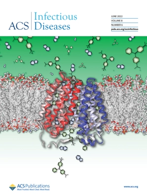

Publications
- 1. Wu, T., Wilhelm, M. J., Ma, J., Li, Y., Wu, Y., & Dai, H. L. Influence of Phase Transitions on Diffusive Molecular Transport Across Biological Membranes. Angewandte Chemie - International Edition 61, (2022). (IF:16.82)
- 2. Wu, T., Wilhelm, M. J., Li, Y., Ma, J. & Dai, H.-L. Indole Facilitates Antimicrobial Uptake in Bacteria. ACS Infect Disease 8, 1124–1133 (2022). [cover page feature article] (IF: 5.084)

- 3. Wilhelm, M. J., Sharifian Gh, M., Wu, T., Li, Y., Chang, C. M., Ma, J., & Dai, H. L. Determination of bacterial surface charge density via saturation of adsorbed ions. Biophysical journal, 120(12), 2461–2470, (2021). [cover page feature article] (IF: 4.033)
- 4. Yang, L., Wu, T., Fu, C., Chen, G., Xu, S., and Xu, W. SERS determination of protease through a particle-on-a-film configuration constructed by electrostatic assembly in an enzymatic hydrolysis reaction. RSC Advances 6: 90120–90125, (2016). (IF: 4.036)